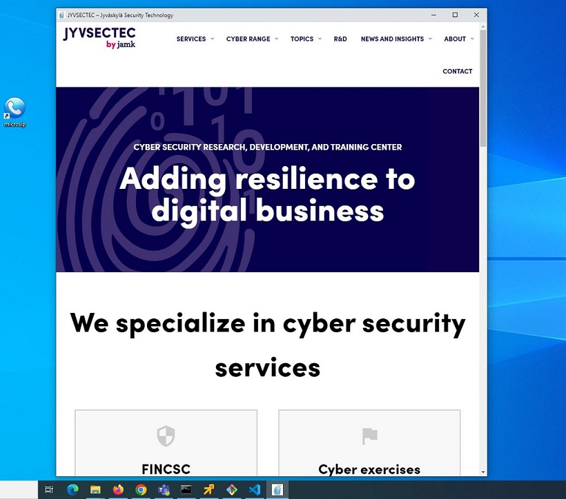
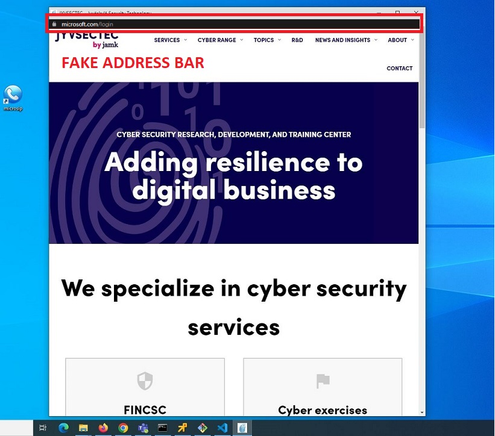
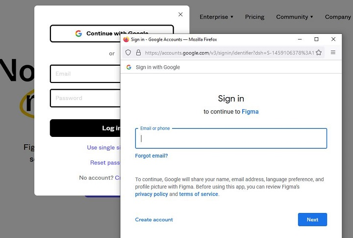
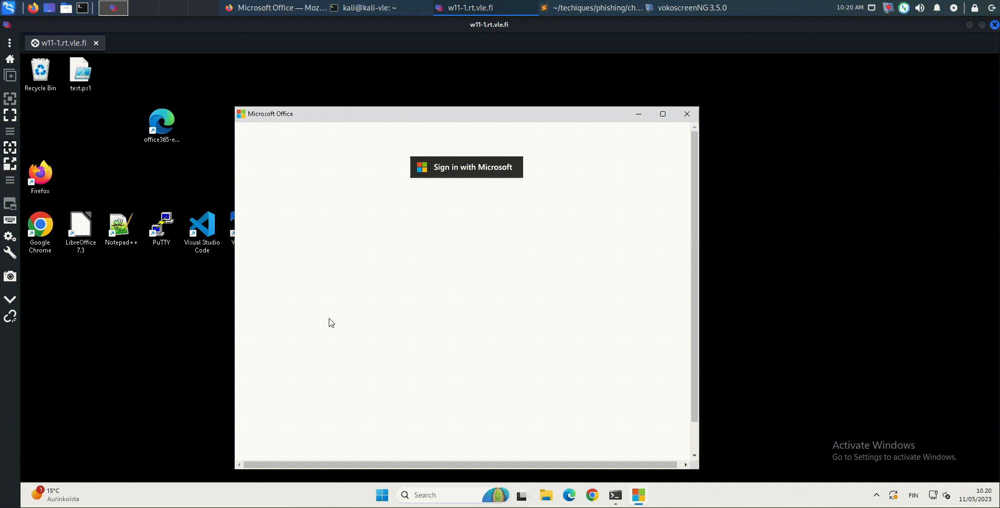
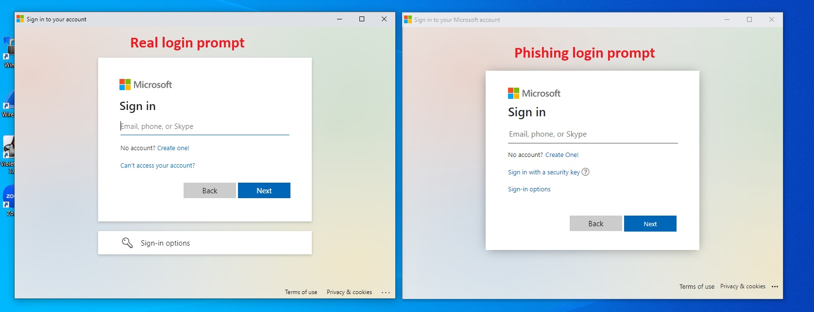
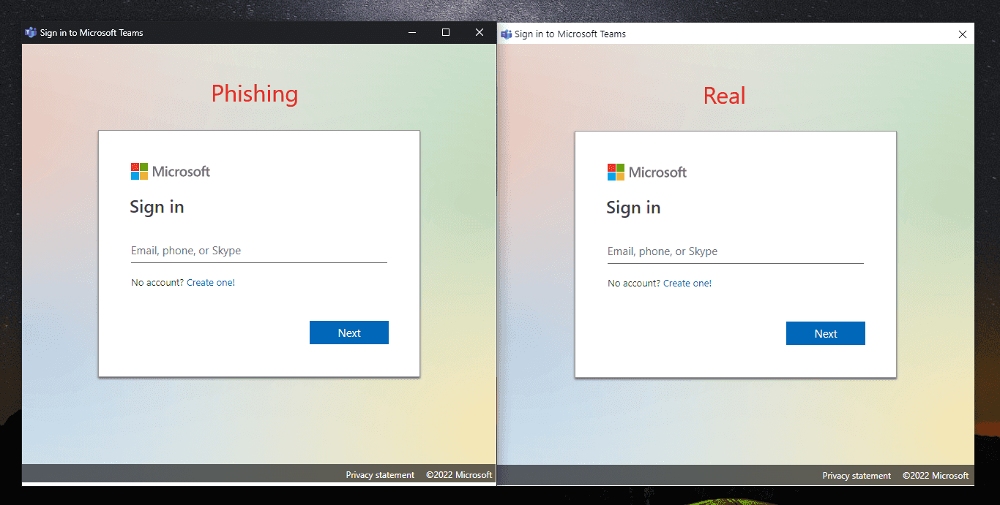

Browser-in-browser attack
Background
Chromium application mode
Chromium based browsers (such as Chrome and Edge) support the --app commandline flag. This will launch a website in application mode which does several things:
- Launched window is given a desktop application appearance rather than a browser appearance.
- Launches the website while hiding the address bar.
- Windows taskbar displays the website's favicon rather than the browser's.
- Causes the site to be launched in a seperate browser window.
Commands to launch Chrome and Edge in application mode and open JYVSECTEC website:
# Microsoft Edge
"C:\Program Files (x86)\Microsoft\Edge\Application\msedge.exe" --app=https://jyvsectec.fi
# Chrome
"C:\Program Files\Google\Chrome\Application\chrome.exe" --app=https://jyvsectec.fi
The above commands create the window shown below:

We can see the Windows task bar displaying the site's favicon as the icon.
Inserting a fake address bar
Because the application mode hides the address bar, we can create a site with a fake address bar with some basic HTML/CSS:

This is a local copy of the site edited with the fake URL bar.
Pop-up login window
When authenticating to websites like Microsoft, Google etc. we're given a pop-up window that asks us to authenticate. The image below shows the window that appears when someone tries to login to Figma with their Google account:

Impersonating the pop-up login window
Impersonating a pop-up login window is easy with some basic HTML/CSS knowledge. We can use an iframe to point to a malicious server hosting the phishing page and the results are telling:
Demo

Impersonating endpoint software
With this technique, VPN, backup, Microsoft Office login software or pretty much anything can be impersonated if you have basic HTML/CSS skills.
Here's an example of an impersonation of the Microsoft login when logging into Office 365:

(This example can be found in this repository. It's a forked version of JoniRinta-Kahila's spoofed MS login page).
Another example is from Mr. D0x, where the Microsoft teams software login prompt is impersonated:

The difference between real and fake phishing prompts can be very subtle and most likely will not cause alarm.
Demo
Linux & MacOS
Chromium's application mode works on other operating systems the same way as per Chromium's documentation.
Useful tricks with JavaScript
The phishing site can control certain aspects of the window when launched.
window.close() - Closes the window. Can be used to terminate the window after user performs an action.
window.moveTo(x,y) - Positions the window. Use this to place the window to a certain area of the screen.
window.resizeTo(x,y) - Resizes the window. Use this to resize the window to match the software being impersonated.
Determining the legitimacy of a URL when hovering over a link is not effective if JavaScript is enabled. The href -tag can be pointed to a legitimate site. This can be overridden with a simple onclick() -event:
<a href="https://jyvsectec.fi" onclick="return launchWindow();">JYVSECTEC</a>
function launchWindow(){
// Launch the your fake authentication window
return false; // This will make sure the href attribute is ignored
}
Detection
Dragging the window
One way of detecting a BitB attack is by dragging the window to the edge of the browser. If the window cannot escape the browser then it's not a real window.
Browser extension
@odacavo released a browser extension that can detect and warn users about embedded iFrames. It's available here.